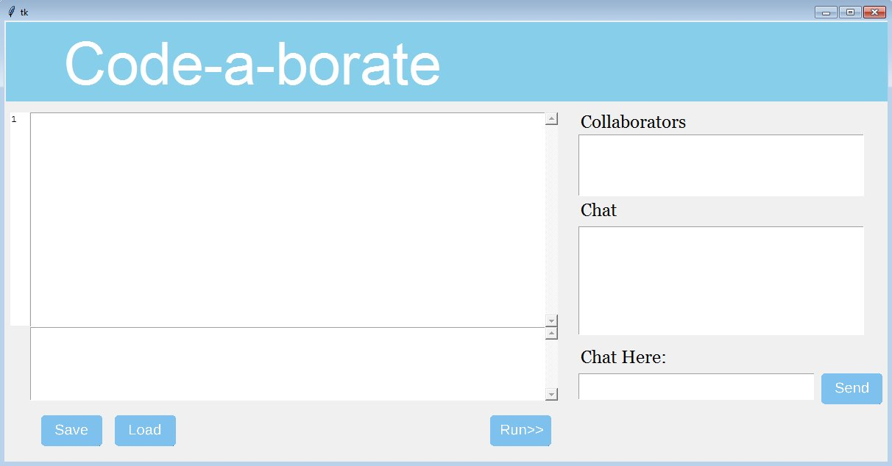
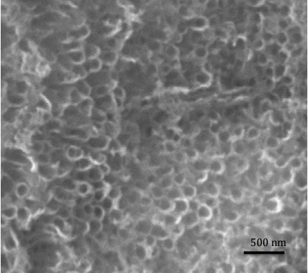
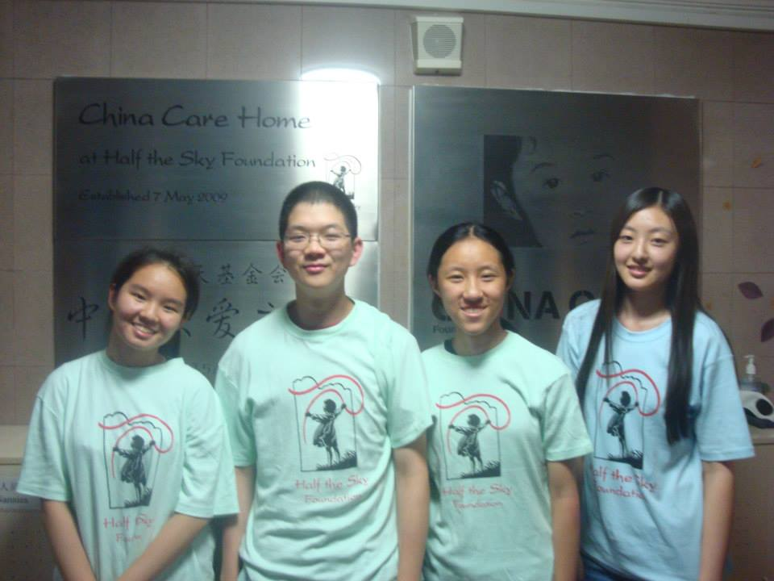

TRACY WAN
A student at Carnegie Mellon University
Welcome to Tracy Wan's personal website! Currently I am a freshman at Carnegie Mellon University. I am pursuing a B.S. in computer science.
Honors & Awards
| 2015/12 | School of Computer Science Dean's ListGPA: 3.80/4.00 |
| 2015/01 | Intel Science Talent Search Semifinalist |
| 2014/10 | 4th World Mathematics Team Championship Merit Certificate |
| 2014/10 | Canadian Open Mathematics Challenge Performance with Distinction |
Projects
Code-A-Borate (2015)
- Multithreaded server to allow multiple clients to edit the same python file together
- Utilized tokens for syntax highlighting of function names and data types
- Support code transfer and text communication among clients

The Application of Titanium Dioxide Nanotube for Wastewater Decontamination (2013-2014)
- Designed personal research experiments and assigned specific milestones for each experimental step
- Utilized common chemistry laboratory equipment, scanning microscope and transmission microscope
- Produced significant data and analyzed the data using Microsoft Excel
Activity
Dance (2013, 2015)
Participated in the International Day of Acceptance: Chinese Fan (and Ribbon) Performance
ChinaCare (2012-2015)
- Volunteered as caregiver in Beijing China Care Home
- Coordinated monthly gatherings to educate adopted Chinese orphans about Chinese culture
- Organized Academy’s Got Talent, a school-wide talent show, and Lunar New Year Festival
- Supervised monthly bake sale as treasurer and raised money to sponsor three surgeries